Study Spaces REST API · UNSAM Programación 2 /
01 / 23
Universidad Nacional de San Martín · Programación 2
Plataforma RESTful en capas, modelo de dominio polimórfico y cliente web para descubrir, reseñar y moderar espacios de estudio.
Equipo de Desarrollo
Julieta Elhalem · Aldana Mota · Valentina Di Iorio · Santino Enzo Semec
Docentes Evaluadores
Rosana Matuk (@matuk) · Santiago Blas (@santiagoblaslaguzza)
Producción & QA
201 tests Pytest · 8 migraciones Alembic · study-spaces-rest-api.onrender.com
00 — Recorrido de la presentación
Siete bloques técnicos conectados con el código real del repositorio. Tocá cualquier tarjeta para saltar al capítulo.
00 — Propuesta de producto
Los estudiantes necesitan saber dónde hay WiFi estable, enchufes disponibles y silencio real. Construimos una API RESTful en FastAPI integrada con nuestro cliente web de 10 pantallas en frontend/.
Al final de la presentación mostraremos el flujo completo corriendo directamente sobre la aplicación real.
Capítulo 01
De la información dispersa a una plataforma centralizada
La información sobre cafeterías, bibliotecas y coworkings suele estar fragmentada: sin datos técnicos de conectividad, enchufes ni nivel de ruido.
Diseñamos un MVP con 3 actores polimórficos que colaboran sobre un mismo modelo de dominio validado y moderado.
01 — Alcance 100% implementado
Los 6 requerimientos del MVP más el módulo extra de publicaciones (/posts) están operativos y verificados con Pytest.
01 — Integración con la API en producción
frontend/)
10 pantallas HTML/CSS/JS vanilla que consumen la API desplegada en Render mediante JWT Bearer y manejo explícito de estados.
02 — Separación de responsabilidades
Módulos reales en el repositorio
02 — Herramientas de ingeniería
02 — Trazabilidad de punta a punta
Ejemplo real: cómo viaja POST /reviews/space/1 desde HTTP hasta el commit en base de datos.
Contrato HTTP · POST /reviews/space/1
Authorization: Bearer <jwt_student>
Payload: {"rating": 5, "comment": "Excelente WiFi y silencio", "images": []}
→ 201 Created · ReviewResponse
→ StudySpace.average_rating actualizado automáticamente
Regla de arquitectura
Cada capa conoce únicamente a la capa inmediata inferior: Router → Service → Repository → Model.
Esto evita acoplar las reglas del negocio a FastAPI o a consultas SQL crudas, facilitando pruebas aisladas.
Capítulo 03
Single-Table Inheritance en SQLAlchemy 2.0
En lugar de condicionales dispersos por rol o tipo, modelamos el dominio con jerarquías polimórficas reales.
Las clases base User y Report prohíben la instanciación directa en __init__ lanzando TypeError, y SQLAlchemy instancia la subclase concreta según la columna discriminadora.
Protección de clase base abstracta (app/models/user.py)
class User(Base):
__tablename__ = "users"
__mapper_args__ = {"polymorphic_on": "role"}
def __init__(self, **kwargs):
if type(self) is User:
raise TypeError(
"User es abstracta: usar StudentUser, "
"BusinessUser o AdminUser"
)
super().__init__(**kwargs)
tests/test_models.py: instanciar User() o Report() lanza TypeError.
03 — Modelo de Dominio Completo (Vectorial Offline)

03 — Single-Table Inheritance en SQLAlchemy
Al hidratar filas desde la base, SQLAlchemy instancia automáticamente la subclase concreta según su columna discriminadora.
03 — Comportamiento encapsulado en StudySpace & Review
Sin columnas redundantes ni desincronización: el promedio se deriva en tiempo real filtrando reseñas visibles.
class StudySpace(Base):
def calculate_average_rating(self) -> float:
visible_ratings = [
review.rating for review in self.reviews
if getattr(review, "is_visible", True)
]
if not visible_ratings:
return 0.0
return round(sum(visible_ratings) / len(visible_ratings), 2)
@property
def average_rating(self) -> float:
return self.calculate_average_rating()
class Review(Base):
def hide(self) -> None: self.is_visible = False
def restore(self) -> None: self.is_visible = True
CheckConstraint("rating BETWEEN 1 AND 5") y UniqueConstraint("user_id", "space_id") garantizan integridad a nivel SQL.
04 — Patrón implementado en producción
La superclase define el algoritmo fijo de cierre y delega en cada subclase la medida concreta sobre lo reportado.
class Report(Base):
def resolve(self) -> None:
"""Template Method: flujo fijo de resolución."""
self._apply_resolution() # 1. Paso polimórfico
self._close(ReportStatus.RESOLVED) # 2. Paso común
def dismiss(self) -> None:
self._close(ReportStatus.DISMISSED)
def _close(self, new_status: ReportStatus) -> None:
self.status = new_status
self.resolved_at = datetime.now(UTC)
self._notify_observers(new_status)
Las subclases nunca duplican el cambio de estado ni el timestamp resolved_at: solo sobrescriben _apply_resolution().
04 — Implementados en el código de producción
Repository, Service Layer, Observer y NotificationService polimórfico activos en la API y cubiertos con 201 tests.
05 — RQ1 · Autenticación Stateless & Autorización
bcrypt.hashpw (nunca en texto plano).POST /users/login emite un token Bearer con sub=str(user.id) y expiración de 8 horas.get_current_user valida firma, expiración y que user.is_active sea True.
Al iniciar el contenedor Docker, crear_admin.py --auto lee ADMIN_EMAIL y ADMIN_PASSWORD desde variables de entorno e inicializa el AdminUser de forma idempotente.
def _require(user_class: type[User], detail: str):
"""Exige un usuario autenticado de cierta subclase."""
def dependency(user: User = Depends(get_current_user)):
if not isinstance(user, user_class):
raise HTTPException(status_code=403, detail=detail)
return user
return dependency
require_student = _require(StudentUser, "Solo para estudiantes")
require_business = _require(BusinessUser, "Solo para negocios")
require_admin = _require(AdminUser, "Solo para administradores")
Gracias al mapeo polimórfico de SQLAlchemy, isinstance(user, StudentUser) verifica el rol directamente con el sistema de tipos de Python.
05 — 8 Routers registrados en app/main.py
06 — Calidad verificada con Pytest
Superamos ampliamente el mínimo de 10 pruebas requerido por la cátedra: cada endpoint, regla de negocio, notificación Observer y jerarquía polimórfica se testea con SQLite aislado por test en tests/conftest.py.
Suite Pytest
201
Verificados con pytest
Alembic
8
Migraciones versionadas
Distribución real de la suite (tests/)
201 collected & passing06 — DevOps & Producción
07 — Demostración Práctica (Aplicación aparte)
Recorrido en vivo sobre frontend/ y Swagger UI conectados a la API en producción (127.0.0.1:5500).
Accesos directos para la demo (abren en pestaña aparte)
El servidor local expone el cliente web real en /frontend/index.html habilitado por CORS en producción.
07 — Conclusiones y Roadmap Post-MVP
Mensaje final · Programación 2 (UNSAM)
Un buen diseño orientado a objetos no queda solo en el diagrama UML: se refleja en una arquitectura desacoplada, polimórfica, testeada y en producción
Defensa Oral & Recursos
¿Preguntas o comentarios?
Julieta Elhalem · Aldana Mota · Valentina Di Iorio · Santino Enzo Semec
Programación 2 — Universidad Nacional de San Martín (UNSAM)